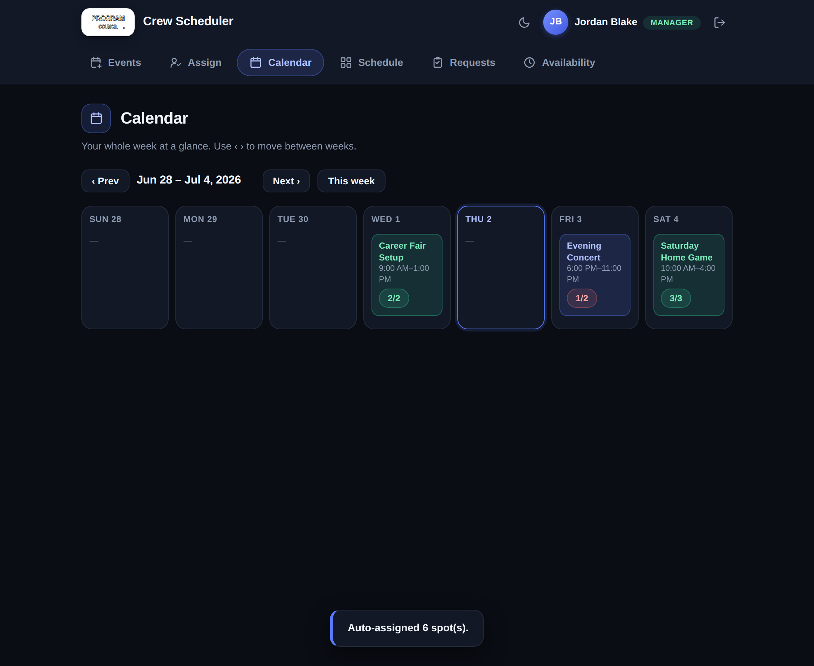
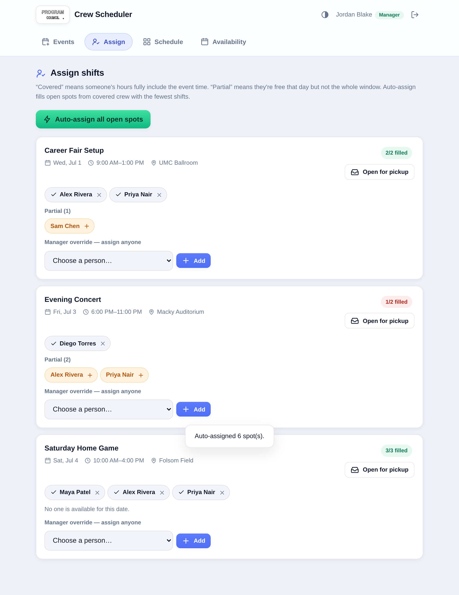
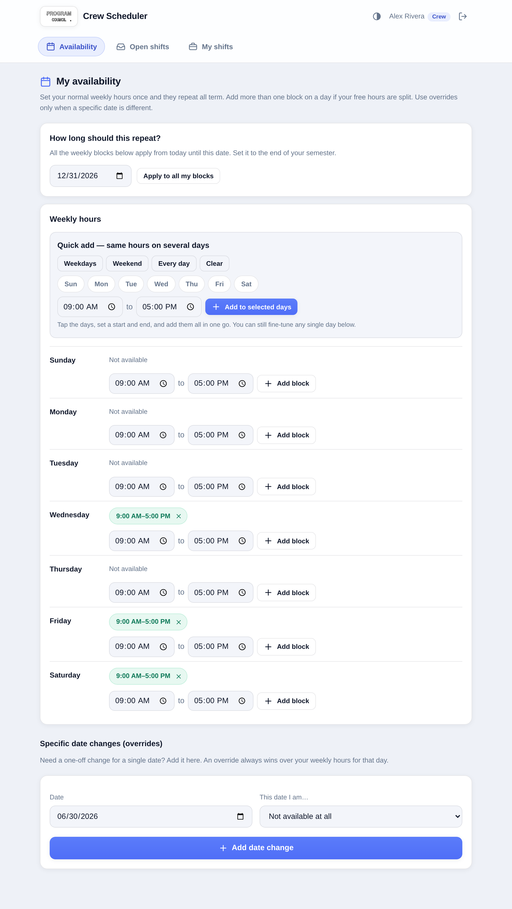
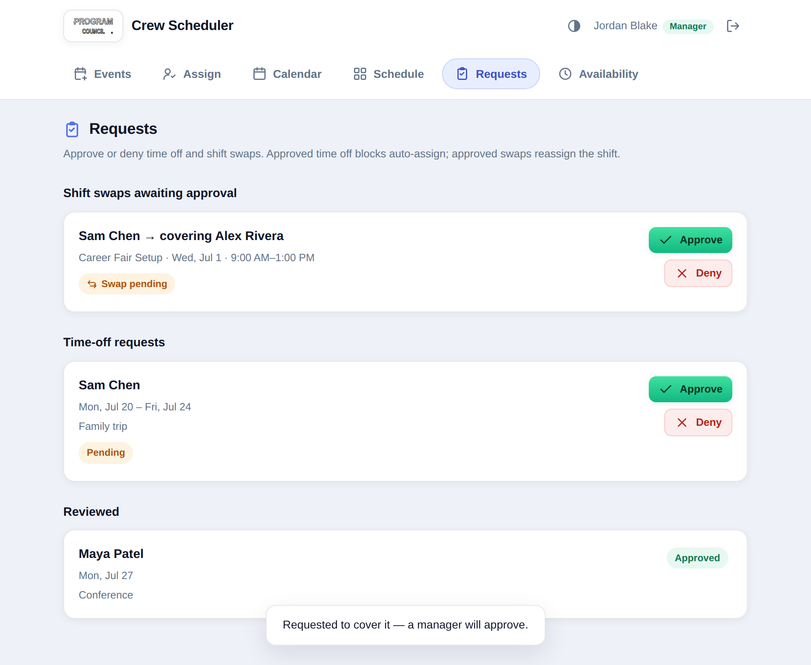
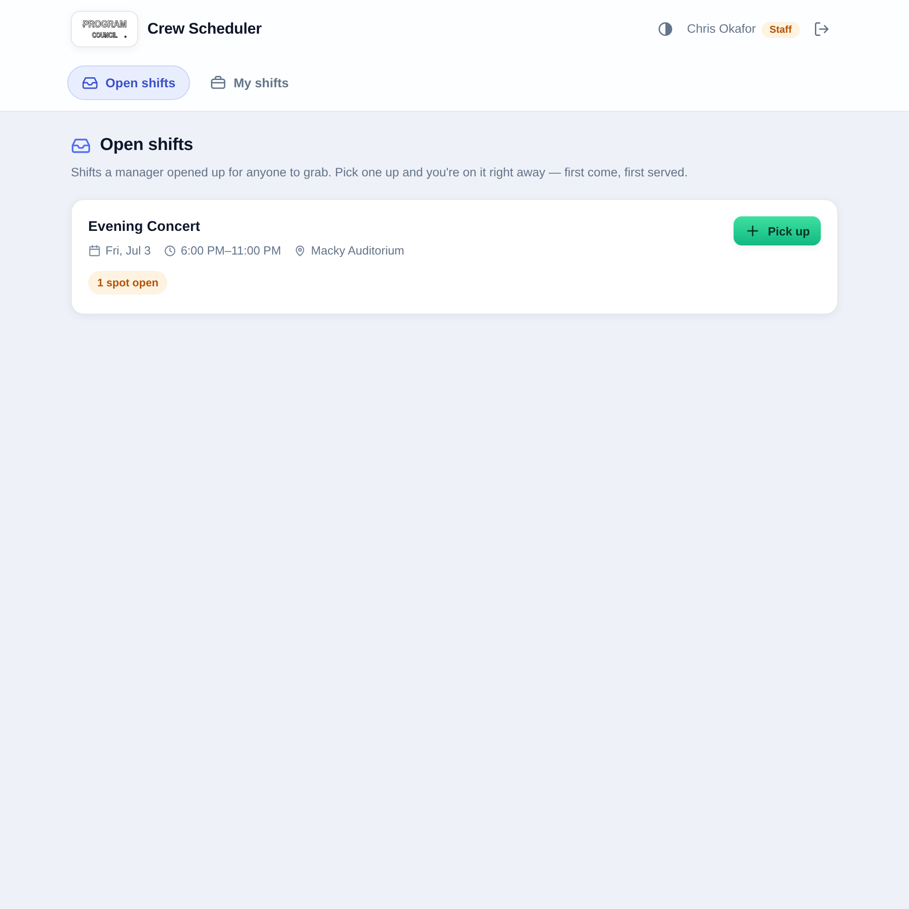
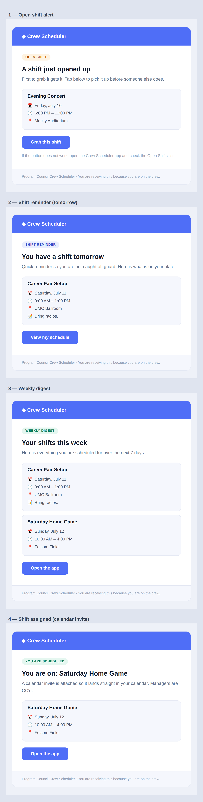
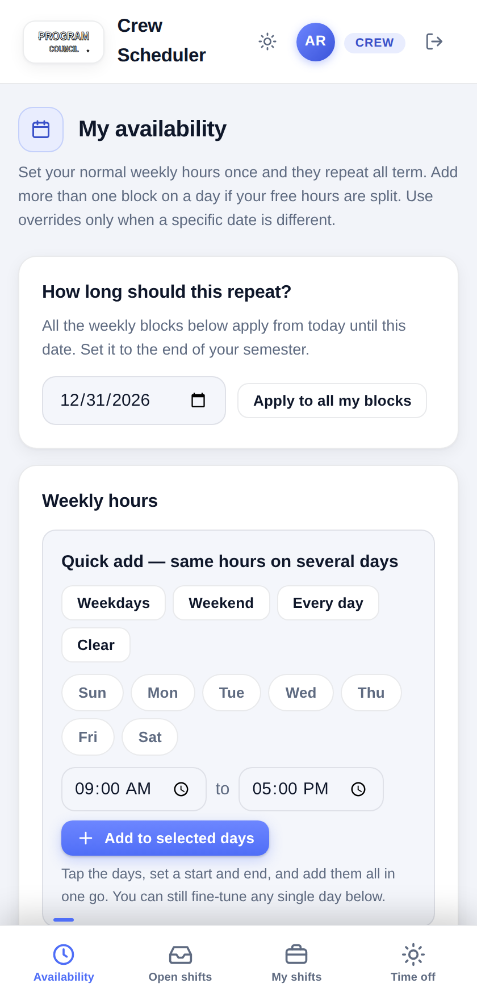

Program Council
Portal








Grew a crew scheduler into Program Council's full operations portal — auto-scheduling, a public quoting & booking system with AI-assisted revisions, a queued email/calendar pipeline, and a geofenced QR time clock — 30 users, 34 tables, 597 emails sent.
As Director of Operations for CU Boulder’s Program Council, I built — and keep building — the portal the organization runs on. What began as a crew scheduler is now one front door for everyone: student orgs, departments, and external clients get an instant production quote and can track a booking without an account, while crew, staff, managers, and advisors sign in to schedule. Behind it, a weekly auto-scheduler fills shifts from real availability, a queued email and calendar pipeline keeps everyone informed, and a geofenced QR time clock is rolling out.
- Built a weekly auto-scheduler: cron-driven runs with retry (running → succeeded / retrying / failed), decline memory so someone who stepped off an event is never placed back on it, weekly commitments with an office-hours fallback, and automated Saturday availability asks — every shift tagged by how it came about (auto / pickup / override / supervisor).
- Built a production quoting & booking system: a 27-item priced catalog and 9 bundles, instant quotes with line items, discount and tax math, booking reference codes, a five-state review flow, change requests, and a price-change audit log — open to RSOs, departments, and external clients with no account required.
- Added AI-assisted request revisions: a
suggest-request-fixEdge Function proposes fixes to a booking, and every revision is tracked with its source (manual / AI / auto), the model used, and a proposed → applied / denied / superseded lifecycle so a manager always has the final say. - Engineered a reliable email + calendar pipeline: a queued outbox (attempts, last error, attachments) drained by a
send-outboxfunction; per-shift and per-event notices, weekly digests, and asks guarded by primary-key claims so a retry or a racing cron can never double-send; and iCalSEQUENCEtracking per person per event so a calendar never drops a newer invite as stale — 597 emails delivered to date. - Rolled out a geofenced QR time clock: QR clock-in with GPS distance and accuracy checks, auto-close and capping, office vs. shift blocks, a rotating-code kiosk role, emailed period summaries, and unscheduled entries routed to manager review.
- Extended the RLS model to six roles (crew / staff / manager / client / advisor / kiosk) with on-leave and department attributes, shift archiving with hours worked, drop-vs-swap coverage requests, supervisor and split shifts, and international work-hour compliance flags.
- Scaled from 10 to 30 active users and from 9 to 34 tables while staying in production the whole time; the original notification functions have been iterated 14–22 revisions each as the workflow grew.
- The trust model is anon-key-plus-RLS: the frontend ships only Supabase's public key, and every authorization decision lives in Postgres. A
SECURITY DEFINERtrigger onauth.usersassigns roles at signup server-side — crew and staff freely, manager only if the submitted code matches one stored in a config table with RLS enabled and deliberately zero policies, so no client can ever read it. - Open-shift pickup is race-safe at the database layer: a
BEFORE INSERTtrigger takes aSELECT … FOR UPDATErow lock on the event, so two people tapping the last spot at the same instant can't both win — one gets the shift, the other gets "this shift just filled up." Aunique(event_id, user_id)constraint separately blocks double-claiming. - The swap state machine runs entirely through server-side RPCs:
claim_swap()moves open → pending under a row lock while rejecting self-covers and people already on the event, andreview_swap()atomically reassigns the underlying shift row on approval — so a shift can never change hands without a manager's decision, no matter what the client sends. - Availability resolves through a strict precedence chain — approved time off, then single-date overrides, then weekly rules filtered by weekday and term date range — classifying each person as covered, partial, or unavailable for an event's exact time window. Auto-assign fills only fully-covered crew, sorted fewest-shifts-first for fairness, and is position-aware when an event defines a per-role breakdown (e.g. 2 Leads + 3 General).
- Notifications are Database Webhooks → Deno Edge Functions: an insert on
shiftstriggers a hand-built iCalendarMETHOD:REQUESTinvite emailed to the assignee with all managers CC'd, and flipping an event to open-for-pickup broadcasts to every eligible person (BCC'd for privacy). A third function, guarded by a shared cron secret, sends day-before reminders and weekly digests on a pg_cron schedule. All three exit cleanly until SMTP secrets are set, so email is purely additive.